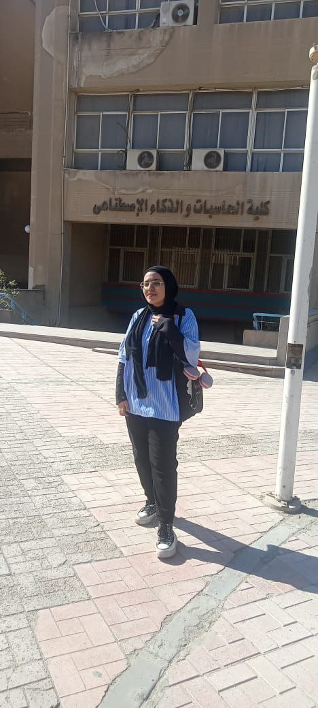

Hi, I'm Jana Maher
I'm a passionate front-end developer with a focus on creating beautiful and functional websites. I love turning ideas into code and building projects that make a difference.
I specialize in HTML, CSS, JavaScript, and I'm constantly learning new tools like Git, GitHub, and responsive design best practices.
Skills
HTML
CSS
JavaScript
React
Bootstrap
Git
GitHub
Responsive Design
My Journey
- 2024 - Now: Studying Computer Science
- 2024: Reached level2 in problem solving with c++
- 2024: Built several front-end projects using HTML/CSS/JS
- 2025: Intern with DEPI in Software track React front-end
- 2025: Applied to internships and building my own portfolio
My Vision
My goal is to become a professional front-end developer, work on meaningful projects, and join a team where I can grow, learn, and make an impact.